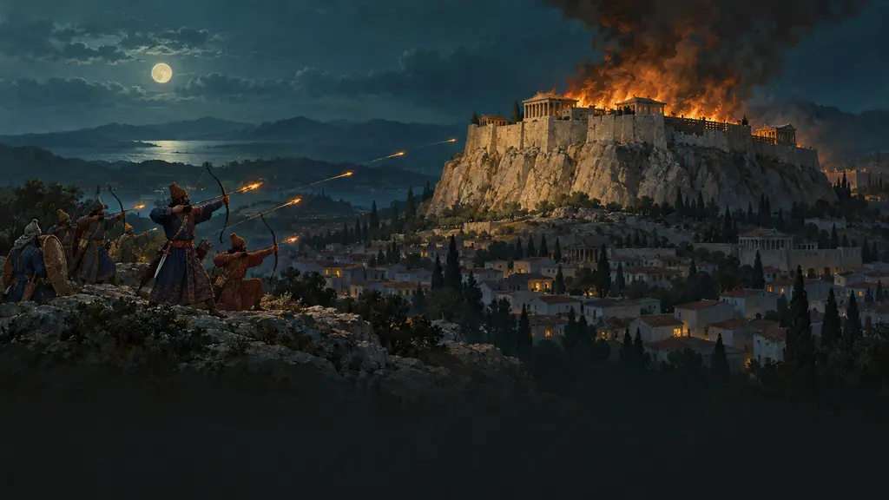
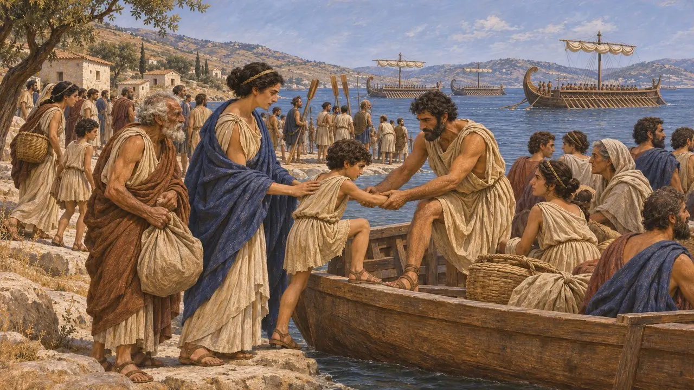
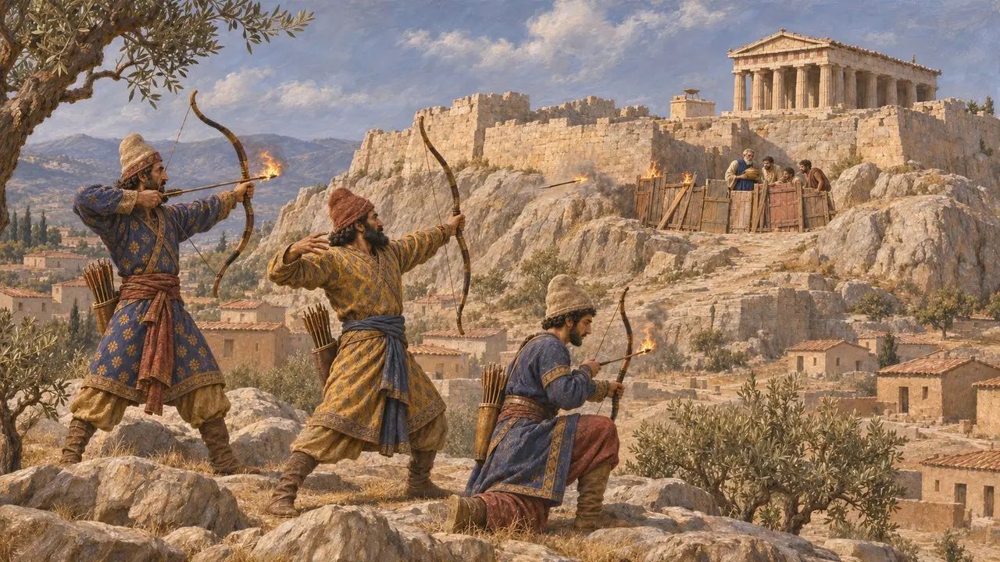
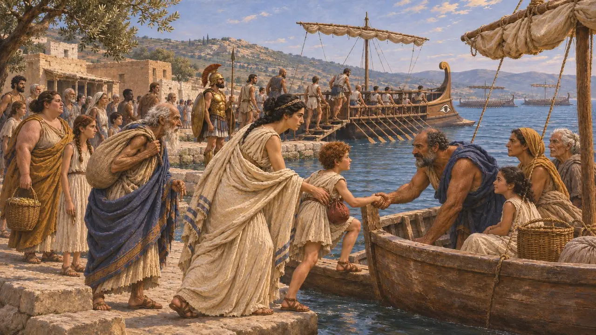
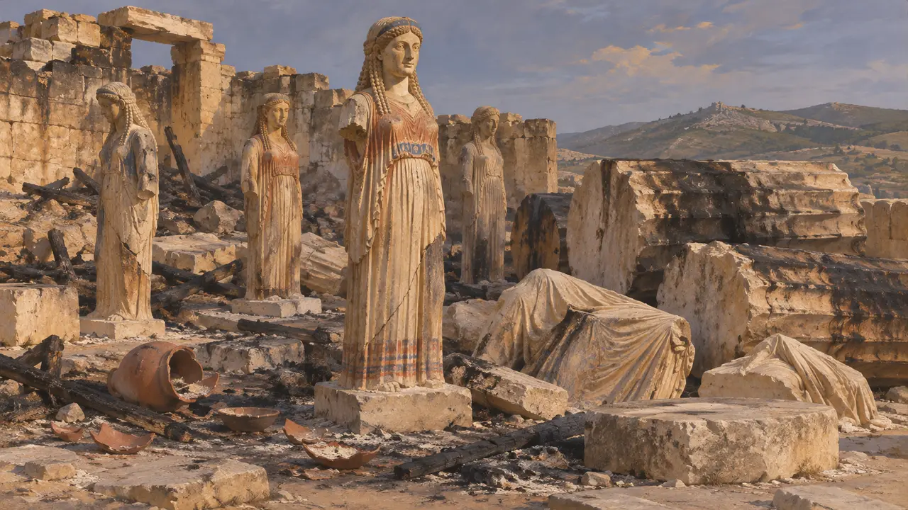
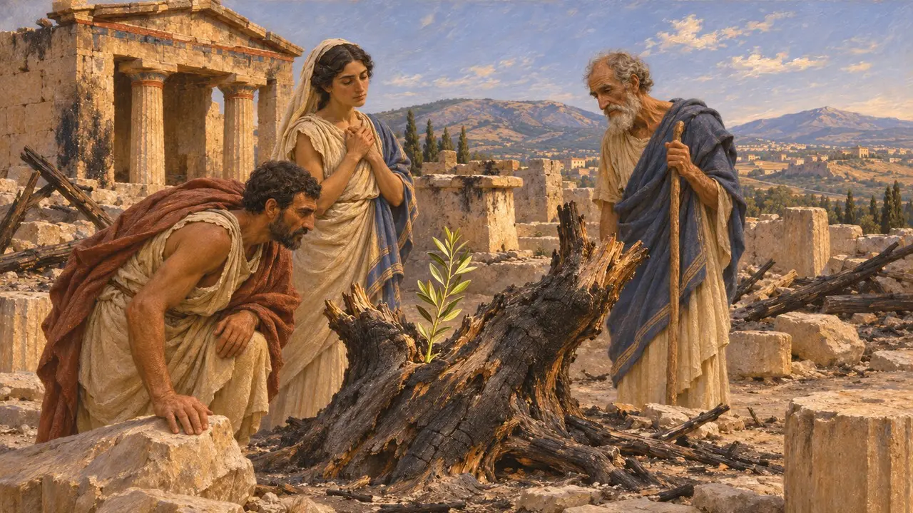

Энциклопедия › Битвы и события

Взятие Афин персами
Взятие и сожжение Ксерксом Афин и их Акрополя, конец лета 480 г. до н. э.
В конце лета 480 г. до н. э., через несколько недель после Фермопил, армия Ксеркса вступила в Аттику и нашла Афины почти пустыми. Горстка защитников удерживала Акрополь, пока персы не поднялись по скале, не перебили их и не сожгли храмы. Геродот связывает этот поджог с местью за Сарды, но афинский флот уцелел и сразился при Саламине. Ни один персидский текст не упоминает о взятии города.
В игре: Игра показывает осаду Афин и сожжение Акрополя и оливы Афины. У Геродота держался только Акрополь, ведь нижний город опустел, а убежищами служили Трезен, Эгина и Саламин.

Эвакуация Аттики
Античное свидетельствоГеродот сообщает, что, когда греческий флот вернулся от Артемисия, афиняне попросили его зайти к Саламину, пока они вывозят семьи из Аттики. Глашатай объявил, что каждый афинянин должен спасти детей и домочадцев как сумеет. Большинство отправило их в Трезен на Пелопоннесе, другие — на Эгину и Саламин. Затем мужчины встали на корабли флота, для которого, как пишет Геродот, Афины при Саламине выставили 180 судов.
Herodotus 8.40-41, 8.44

Осада Акрополя
Античное свидетельствоГеродот сообщает, что персы нашли город пустым, если не считать нескольких храмовых казначеев и бедняков на Акрополе. Эти люди построили заслон из дверей и досок, сочтя его деревянной стеной из прорицания. С Ареопага персы метали в заслон горящие стрелы. Защитники отвергли условия, предложенные через Писистратидов. Затем воины взобрались по крутому склону у святилища Аглавры, перебили защитников, разграбили храм и сожгли Акрополь.
Herodotus 8.51-53

Трезенский декрет
СпорныйВ 1960 году была опубликована мраморная плита из Трезена с текстом декрета, внесённого Фемистоклом: он предписывал эвакуировать Аттику и снарядить 200 кораблей. Надпись высечена в III веке до н. э., примерно через двести лет после событий. Одни историки полагают, что в ней сохранён подлинный декрет, возможно, принятый ещё до Фермопил. Другие видят в ней позднюю патриотическую реконструкцию. Если декрет подлинный, он говорит о заранее продуманной эвакуации, а не о поспешной, которую описывает Геродот.
M. H. Jameson, A Decree of Themistokles from Troizen, Hesperia 29, 1960

Обгоревшие обломки на Акрополе
Свидетельства эпохиРаскопки на Акрополе в 1885–1890 годах обнаружили статуи кор, надписанные базы и керамику, погребённые в засыпках; многие вещи были разбиты и обожжены. Археологи долго связывали весь этот мусор с персидскими разорениями 480 г. до н. э. и 479 годов до н. э., хотя часть слоёв могла быть заложена позже. Обгоревшие барабаны колонн недостроенного Старшего Парфенона вмурованы в северную стену Акрополя, где их можно видеть и сегодня.
J. M. Hurwit, The Athenian Acropolis, 1999

Священная змея и олива Афины
Позднейшая легендаГеродот приводит два знамения. Перед эвакуацией ежемесячная медовая лепёшка для священной змеи, охранявшей Акрополь, осталась нетронутой, и афиняне решили, что богиня ушла. Плутарх говорит, что Фемистокл воспользовался этим знаком, чтобы убедить афинян уходить. После пожара афинские изгнанники, посланные Ксерксом совершить жертвоприношение, увидели, что сгоревшая олива Афины пустила побег длиной около локтя. Оба рассказа читаются как знаки спасения афинян.
Herodotus 8.41, 8.54-55; Plutarch, Themistocles 10
Источники
- Herodotus, Histories 8.40-55
- Herodotus, Histories 5.102
- J. M. Hurwit, The Athenian Acropolis, 1999
- M. H. Jameson, A Decree of Themistokles from Troizen, Hesperia 29, 1960
- Plutarch, Themistocles 10
- P. Briant, From Cyrus to Alexander, 2002